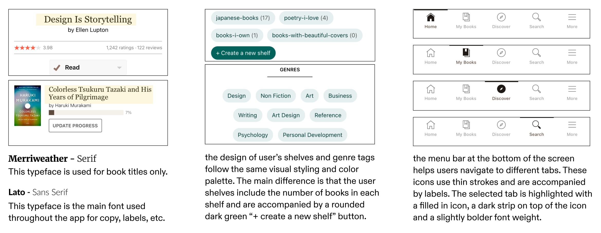
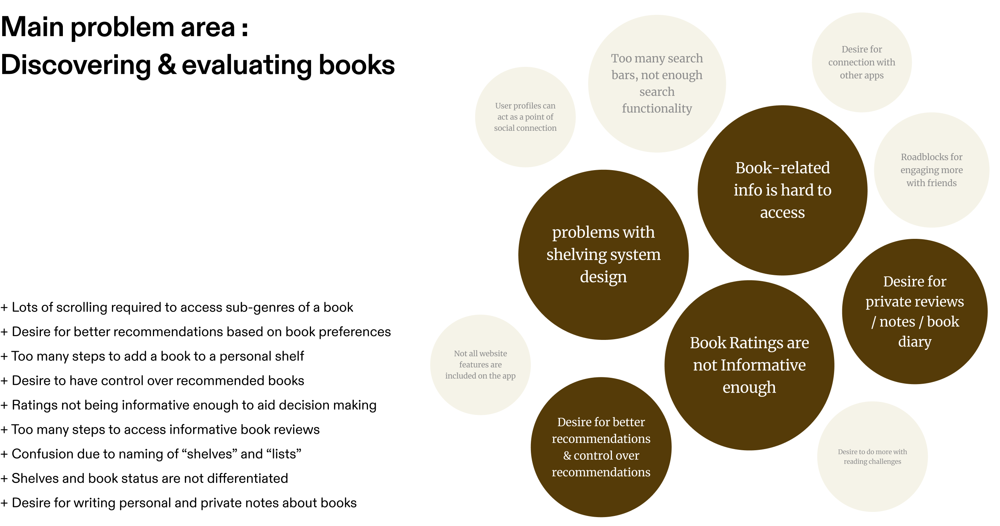

Goodreads: UX research and UI redesign proposal
Launched in 2007, Goodreads is a free platform where book lovers can discover and discuss books, track reading activities, contribute reviews, and interact with the community. Throughout this academic project I conducted UX research and utilized UX methods such as user interviews, affinity mapping and userflows to identify points of frustration within the Goodreads iOS app. This was followed by a UI redesign proposal aimed at improving the organization of book-related information within the app and enhancing the app's book tracking function.

Project Overview
Goal
To conduct UX research and propose a User Interface redesign for one of the most used features within the Goodreads iOS app
Context
3 week long academic project (Feb, 2024)
Team
Sahar Babaei (me, myself and I)
Tools used
Figma / Figjam / ProtoPie
My contributions
UX research / User interviews / Affinity mapping / Userflows/ Heuristic evaluation / Wireframes / UI mockups / Interactive prototypes
UI + UX Research
01 - Evaluating the app's user interface and interactions
I started off by studying the visual and interaction design patterns within the Goodreads app interface.
02 - Learning about users and their frustrations
Survey with 20 participants
To better understand the app’s users and learn about their most used features, the areas they find frustrating and the functionalities that matter most to them, i conducted a survey with 20 participants who were regular users of the goodreads app.
Interview with 2 users
I conducted two user interviews with users from my social circle. Each interview took fifteen minutes. In each interview the user walked me through how they use the app to achieve their goals and explained their favorite and least favorite aspects of the app.
App reviews & online forums
To gain more insight, I read and analyzed discussions about the app on online platforms where users discussed their frustrations with certain parts of the app. I also read and took note of all app reviews from the past year for both Android and iOS versions.
03 - Deriving insights from research data
Proposed redesign
Match in visual and interaction patterns
The proposed feature utilizes the same Interaction patterns as the rest of the app. New pages slide in from the right and when you want to go to a previous page, the current page slides out towards the right side. Similarly, the iconography used for the four tabs follow the default style and interactions as the existing app features.
Swiping between tabs + Tapping on them
To allow better user control and accommodate different preferences, users can switch between tabs by either swiping or tapping on the correlated tab at the top. The Active tab’s icon turn black to help indicate it as the “current” tab.
Easy selection and update of book status
By tapping on the drop down arrow on the button, users are provided with a drop down menu that allows them to quickly select and update the book’s status. The button’s color changes to reflect the meaning of the book status. This provides users with a fast and easy way of updating the book status.
Adding books to lists
The flow for adding books to lists have been improved to take less steps. All lists are consolidated in the same page and books can be easily added to multiple lists. The status of the book can be selected or changed from the same page as well. Lastly, this mock ups introduced the possibility of making booklists public or private. This is indicated by the small lock icon next to the list name.
Challenges
01 - Balance between UX research and UI design
Due to the limited timeline of this project, I needed to ensure to manage and distribute my time very carefully between the UX research and UI redesign stages of this project. This was difficult to manage because jumping too early into the redesign stage would lead to a design solution that is not backed up by proper UX research. On the other hand, spending too much time on UX research meant that i only had one week to come up with, design and prototype an effective UI redesgin.
02 - Match between the proposed redesign and the existing visual design of the app
Another challenge i faced while working on this project was ensuring that my proposed UI redesign fully matched the existing visual and interaction design patterns in the Goodreads app. As tempting as it was to change certain viusal elements and color palettes that looked outdated, i refrained from doing so because i knew any changes to the visual design and interaction design pattern of the app would drastically impact the branding of the app. I had to keep in mind that changing the app's visual language and brand identity did not fit into the scope of this project.
Reflection
Shifting from group projects to working independently as a solo designer on this project was a unique experience. I found myself missing the fresh and unique presepectives that other designers bring into a project. At times I wished I had teammates to exchange ideas with and ask for feedback from. This project reminded me of the importance of teamwork within the field of design while also helping me overcome my Imposter syndrom. Having to go through every step of this project on my own made me realize that I am a capable and well rounded designer. While I'll always appreciate working in team dynamics, I believe that working independently on this project was a valuable and necessary experience for me. Not only did it help me further develop my design skills, it also helped me trust in my own abilities as a designer.